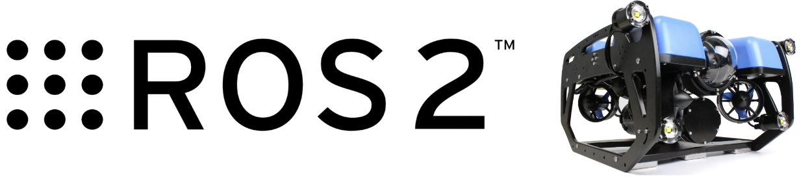
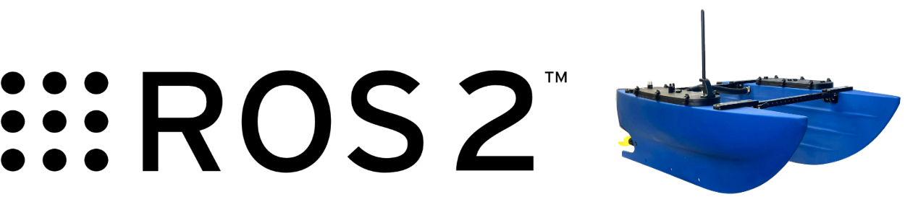
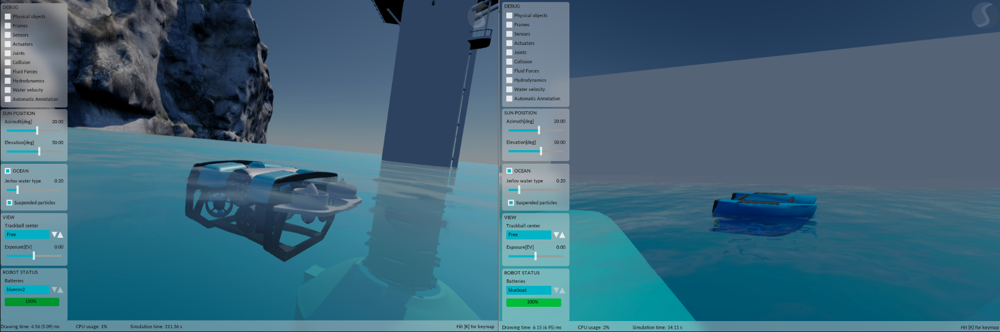
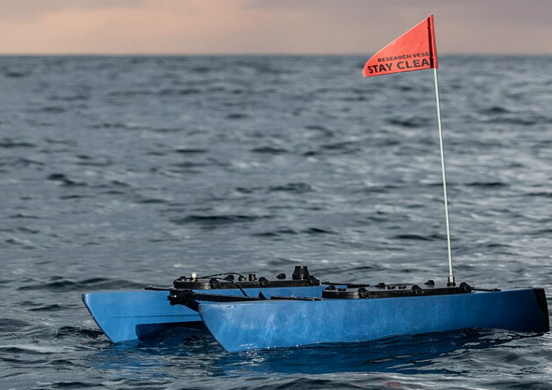
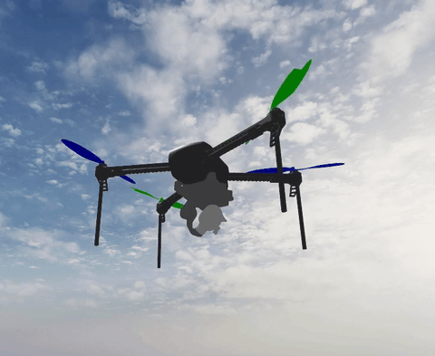
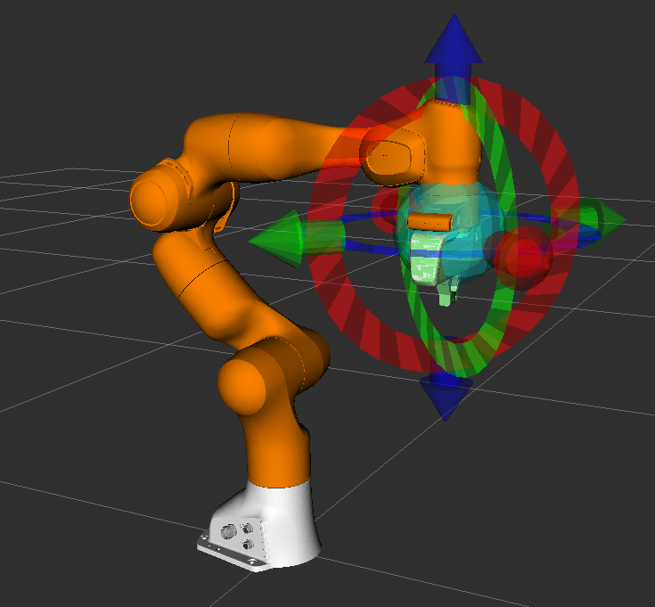
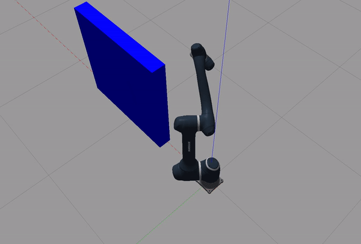

This open-source simulation framework is built to study and validate motion control for tethered multi-robot teams in realistic marine conditions. It combines GazeboSim with high-fidelity environmental plugins and ArduPilot Software-in-the-Loop (SITL), letting researchers test coordinated AUV-ASV behavior before committing hardware to the water. I developed it to close the loop between control theory and sea-ready robotics, making it easier to iterate on algorithms that must survive waves, currents, and tether coupling.

A full simulation environment for the BlueROV2 running Software-in-the-Loop with GazeboSim and ArduPilot. It lets you plan and execute realistic inspection missions using ROS 2, ArduPilot, or QGroundControl, including waypoint navigation and survey patterns. I use this stack to prototype control and autonomy algorithms for underwater vehicles before moving them to real ROV deployments.


A complete GazeboSim + ArduPilot SITL environment for the BlueBoat ASV, enabling realistic mission planning and autonomy testing over ROS 2, ArduPilot, or QGroundControl. It supports waypoint missions, survey grids, and sensor-driven behaviors, and serves as my standard bridge between controller design in simulation and validation on the real boat.



A GazeboSim-based simulator for the RS750 sailboat, built to test sailing dynamics, control strategies, and autonomous behavior in a realistic physics environment. It is a useful testbed for anyone working on wind-driven marine robotics and energy-aware path planning.

This repository packages a complete ROS 2 + StoneFish marine simulation environment inside a Docker container, with bash scripts that build and run everything in one step. It lowers the barrier to reproducing high-fidelity underwater robotics experiments by providing the exact toolchain, commands, and references I use in my own research. If you are working on control, perception, or autonomy for underwater vehicles, this is a fast way to get from idea to simulation.

This repository provides a high-fidelity C++ dynamic model of the BlueBoat ASV, including environmental disturbances from waves, wind, and ocean currents. The equations of motion are integrated with Runge-Kutta methods, and the repository ships with both C++ and Simulink implementations of MPC and PID controllers, plus autotuning support. It is designed as a single, consistent control-design testbed that spans rapid simulation and real-world deployment.

A lightweight but realistic multirotor simulator built for rapid prototyping of aerial control, estimation, and autonomy algorithms. It models the full drone dynamics, sensor streams, and control pipeline so you can test ideas before moving them to a real UAV.
What makes it particularly useful for my work is how naturally it pairs with the marine simulators above. The obvious scenario is offshore infrastructure inspection: a BlueBoat ASV carries the drone out to a wind turbine, holds station against waves and current using the disturbance-aware controllers from the BlueBoat dynamics package, and launches the drone to inspect the tower, blades, or transition piece up close. The same setup works for other maritime assets where a surface vessel provides mobility and the drone provides detail.
Together, the two simulators form a consistent testbed for coordinated marine-aerial missions: station keeping on the water, launch and recovery, trajectory tracking in wind, and sensor fusion across both platforms. That combination is directly relevant to the uncrewed inspection and maintenance systems I work on in research.


A Dockerized ROS 2 + MoveIt setup for manipulator research and education. It includes clean example programs for moving robots in joint space and Cartesian task space, making it a fast starting point for motion-planning experiments, industrial integration, or teaching modern manipulation pipelines.

This framework shows how to train a reinforcement learning agent to plan collision-free paths for a Doosan collaborative robot directly in Cartesian space, then execute them through ROS 2. The agent learns to move between targets while avoiding obstacles, and numerical inverse kinematics converts the planned path into executable joint commands.
The method is based on the Bellman optimality principle and explores a fundamentally different path-planning philosophy than classic joint-space planners like A*. It is a practical example of how learning-based motion planning can be integrated with real robot controllers.

This repository documents how to build a minimal Linux distribution from source, combining deep systems understanding with hands-on implementation. It walks through compiling the Linux kernel inside Docker, integrating a BusyBox userland, and booting the result in QEMU. It is a useful resource for anyone who wants to understand what really happens below the ROS 2 stack in real-time robotics systems.